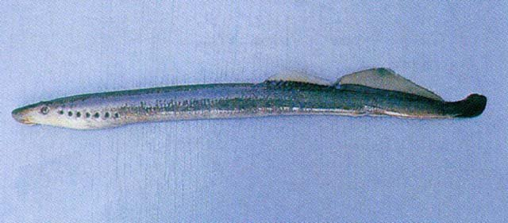
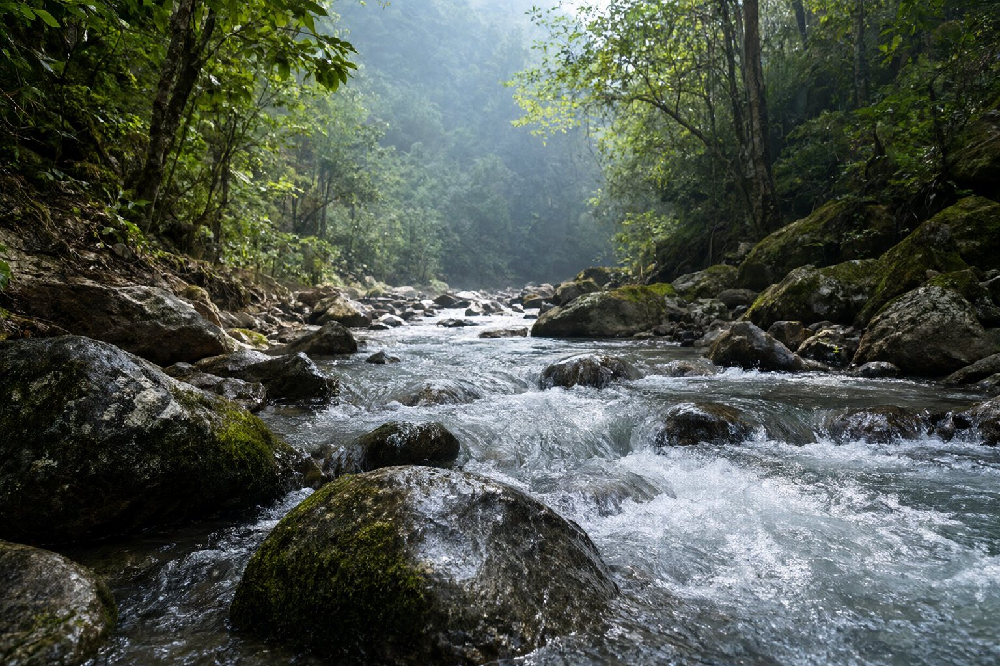

七鳃鳗目 · 七鳃鳗科 · 国家Ⅱ级保护动物
北极七鳃鳗
Lethenteron camtschaticum
七鳃鳗科大型鱼类，分布于黑龙江，多见于底栖水层，以有机碎屑、鱼类等为食。
01形态特征
其特征是口上杆上有 2 个大牙齿，中央一对侧牙板上仅存在 2 个点，并且存在一排后牙。背鳍长在身体的后方，背前部低于后部，雄鱼的背鳍较高；尾鳍下叶略大于上叶，鳍与背鳍和臀鳍相连；臀鳍小，雄鱼的臀鳍只有一个低脊。颜色范围从棕色到橄榄色到灰色，上面较浅，下面较浅。非溯河产卵的形式很少长到超过 18 厘米。其他成体诊断特征：全长 11.0-62.5 cm。体长 14.5–35.0 cm，体重 3.2–87.7 克。身体比例，以全长的百分比表示。
体形呈鳗形；最大体长可达 63.0 cm（全长）；最大体重约 200.00 g。
02地理分布
文献记录分布于黑龙江。
涉及水系包括黑龙江、图们江。
国外分布于西北太平洋、蒙古、加拿大、日本、朝鲜半岛。
03典型生境

山溪与急流多分布于山地丘陵的河谷，底质以砾石、卵石和基岩为主，水流湍急、溶氧充足。鱼类常借助吸盘状结构或扁平体型附着于石面，以水生昆虫和附着藻类为食。
栖息于淡水、咸淡水、海水，底栖水层。
适宜水温 5–18℃；水深 0–50 m。
洄游类型为溯河洄游。
04生活习性
成鱼栖息于河流、湖泊及沿海、河口水域。幼体（沙隐虫）生活在河岸粉沙泥质底质、水流微弱处，也见于泥泞岸边以及河流、湖泊的回水区。成鱼营寄生生活，寄生于多种鱼类体表，亚成体不寄生；成鱼通常在海洋或湖泊中摄食。溯河产卵，产卵于砾石与沙质底质；部分种群为永久淡水定居种群，幼体期可长达 4 年。
05食性与摄食
主要摄食有机碎屑、鱼类、浮游植物、底栖无脊椎动物等。营养级约 4.3。
食性类型属杂食性。
06繁殖
繁殖方式：雌雄异体；受精方式：体外受精；繁殖类型：护卵型。
雄鱼和雌鱼都会筑巢，清除溪底的卵石和小石块。雄鱼用吸盘将自己附着在雌鱼的头上。一对弓起身体，雄鱼将自己包裹在雌鱼周围。两只七鳃鳗都快速振动，卵子和精液被挤出到巢中。两只雄鱼可能同时与一只雌鱼交配。在卵子供应耗尽之前，雌鱼会交配几次，通常是与几位雄鱼交配。幼体在这个阶段花费一到两年的时间。变态后（从秋季到冬季发生，），幼年成鱼顺流而下，流入大海、湖泊或较大的河流（发生在春季，）。
07保护与利用
依据 2021 年《国家重点保护野生动物名录》，日本七鳃鳗被列为国家Ⅱ级保护野生动物（名录名为日本七鳃鳗，与本种为同物异名）。禁止非法猎捕、杀害、收购、运输、出售；涉及野外种群的，禁止擅自捕捉与饲养。IUCN 评估等级为无危，仅作参考，不替代国家名录。
本页不提供垂钓、饲养或野采建议。发现非法捕捞、交易或伤害保护动物的行为，请向当地渔业或林草主管部门举报。
08影像记录
资料来源与说明
物种档案整理自 FishBase（物种 ID 2524），分类接受名参考 GBIF Backbone Taxonomy；保护等级依据 2021 年《国家重点保护野生动物名录》。中文描述由英文原始资料机器翻译并校正术语，可能存在语义偏差。
典型生境图片为生境类型示意图，用于呈现该类水域的环境特征，并非本种在野外的实拍。垂钓、饲养与野采建议仅为科普参考，请以当地渔业与林草主管部门规定为准。